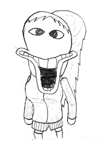

Pronounced: "thr[ah]ng thr[ah]ng thr[oo]ng thr[oo]ng" this equally mysterious organism is the sister of Thring Thring Throng Throng. She is of the same species, but of the opposite gender. Like her brother, she can be called by shouting her name: "THRANG THRANG THRUNG THRUNG" although she is not interested in those pure of heart. For some insane reason, she prefers to assist those with bad intentions or just horrible people in general. We'll never understand why she's like this.